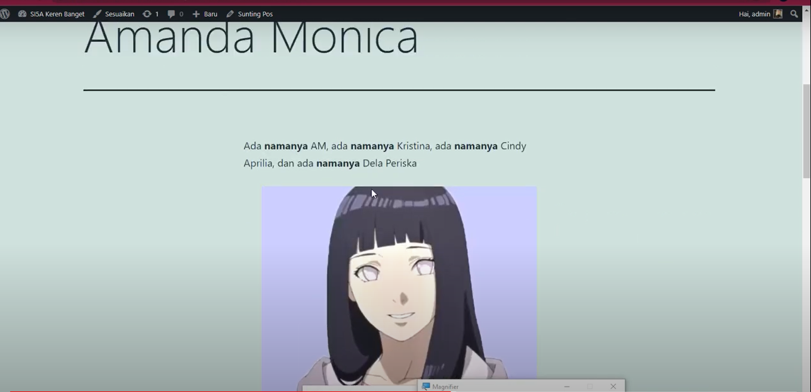

Pertemuan 2
Nama : Tessa Hervika
NIM : 1922500085
Rekayasa Web SI5A
Pada pertemuan 2 belajar cara membuat folder pada github, mengulang penjelasan pertemuan 1 (cara install, backup, dan restore Wordpress),
menjelaskan dashboard (admin area) dan Site Preview (client area), URL Login, Ubah profil & password,
Cara Buat Folder Pada Github
- Buka website github
- Klik new repositori
- Buat nama repositori(si5a2122o)
- Isi deskripsi
- Pilih Public
- Pilih add a README file
- Klik Create Repositori
- Muncul lah File README
- Pada add file klik create new file
- Ketik angka 1 / (untuk nama folder)
- Lalu ketik index.html (nama file)
- Masukkan isi
- Klik Commite new file
- Jika ingin tambah foto dan ubah foto jadi link, contoh ketik script seperti pada gambar berikut

- Klik add files, upload files, lalu drag foto dan klik commit
- Jika sudah, klik settings
- Klik Pages
- Source none diganti main
- Klik save
- Muncul link, lalu klik
- Buka link tersebut dengan menambahkan nama folder yang kita buat tadi (delaper.github.io/si5a21220/1/)
Penjelasan admin area & client area
- Wordpress terdiri dari 2 sisi, yaitu site preview/client area (halaman depan/frontend, hasil dari admin area) dan admin area (backend/dasbor admin)
URL Login
- Admin bisa login di link, http://localhost/si5a2122o/wp-admin
Cara Ubah Profil & Password
- Login pada halaman admin
- Selanjutnya ubah profil password
- Pada dasbor, klik menu pengguna, klik menu profil
- Penyunting visual(mode penyuntingan pakai klik-klik tanpa codingan)
- Jika ingin upload foto, klik tanda tambah, ketik gambar, lalu klik ikon gambar. Kita bisa mengunggah dari sendiri dan bisa juga dari URL. Contoh seperti gambar dibawah

- Penyorot syntax(berhubungan dengan penyunting visual)
- Skema warna bisa ditentukan sesuai selera
- Pintasan keyboard(Jika web kita sudah banyak komentar dari pengunjung, akan terbantu jika menggunakan pintasan keyboard seperti shortcut control)
- Bilah perkakas(Untuk mempermudah edit/sunting web). Namun jika laptop kita digunakan oleh banyak orang disarankan untuk menonaktifkan bilah perkakas.
- Nama pengguna diganti dengan nama masing-masing
- Membutuhkan main server yang aktif untuk mengirim sebuah email
- Isi info biografi
- Untuk foto profil, bisa daftar dulu di wordpress.com
- Lalu atur kata sandi
- Jika sudah, klik perbarui profil